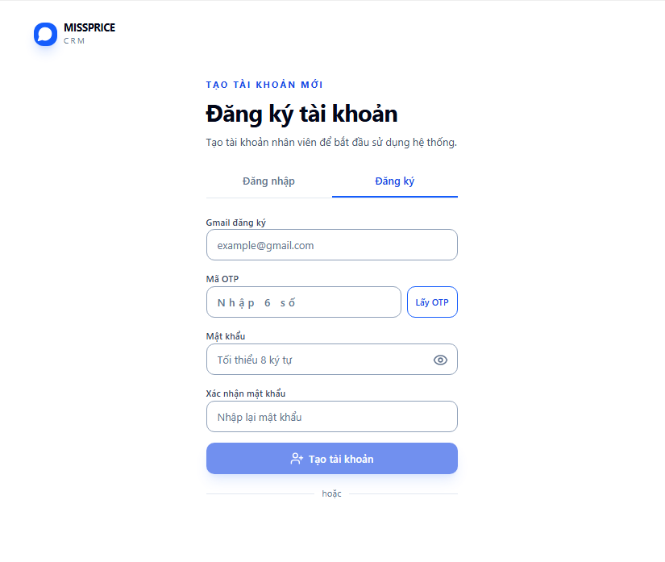
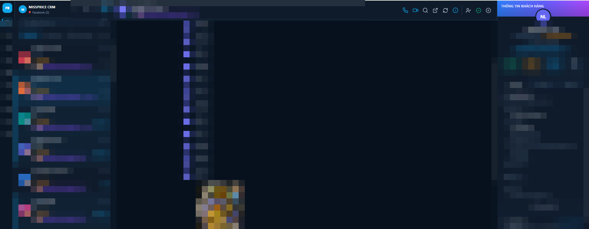
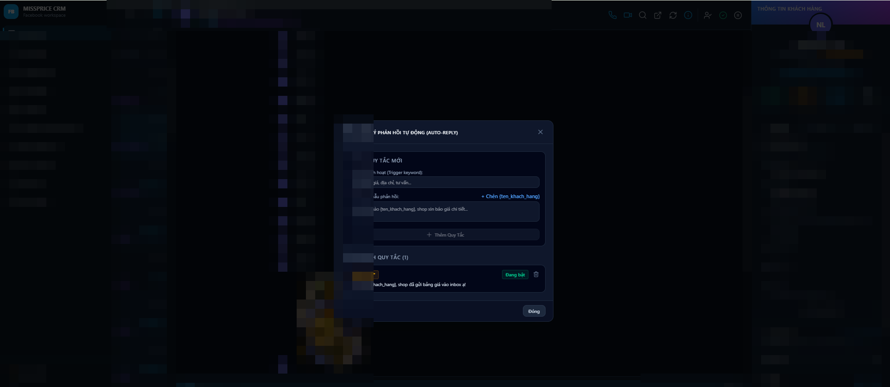

Hướng dẫn
6 bước sử dụng cơ bản
Làm theo thứ tự từ trên xuống là bắt đầu dùng được ngay.
1
Mở app & đăng nhập
Mở ứng dụng MISSPRICE CRM trên máy. Nếu chưa có tài khoản, chuyển sang tab Đăng ký để tạo bằng Gmail + mã OTP.
- Nhập tên đăng nhập hoặc Gmail và mật khẩu, bấm Đăng nhập.
- Đăng ký mới: nhập Gmail → bấm Lấy OTP → nhập 6 số gửi về mail → đặt mật khẩu → Tạo tài khoản.
- Quên mật khẩu: bấm "Quên mật khẩu?" ngay dưới ô mật khẩu.

Đăng nhập bằng tài khoản CRM hoặc Gmail.

Tạo tài khoản nhân viên bằng Gmail + mã OTP.
2
Kết nối Fanpage
Để đọc và gửi tin qua Fanpage, mở Quản lý → Fanpage và cấp token cho từng trang.
- Vào mục Quản lý ở menu trái → chọn Fanpage.
- Bấm Tạo app & Webhook (hoặc Nhập token nếu đã có sẵn), rồi bấm Đồng bộ.
- Đợi danh sách hiện 19/19 trang có token — nghĩa là tất cả Fanpage đã sẵn sàng.
- Tích chọn các trang cần quản lý → bấm Lấy hội thoại để kéo tin nhắn về CRM.
Mẹo: nếu khung chat báo "chưa có Page Access Token", quay lại bước này và đồng bộ lại token.
Danh sách Fanpage đã có token, tích chọn rồi bấm "Lấy hội thoại".
3
Xem & trả lời tin nhắn
Màn hình chính chia 3 cột: danh sách hội thoại, khung chat, thông tin khách.
- Cột trái: mọi hội thoại từ Fanpage + Messenger, kèm nhãn Chưa xử lý, số tin chưa đọc.
- Khung giữa: trò chuyện với khách — soạn tin, gửi ảnh, gửi emoji như bình thường.
- Cột phải: thông tin khách với các nút nhanh Gọi, VIP, Nhắc, Lưu; xuất danh sách ra Excel/CSV.
- Tìm khách nhanh bằng ô Tìm kiếm hội thoại phía trên.

Trái: hội thoại · Giữa: khung chat · Phải: thông tin khách.
4
Gửi tin hàng loạt bằng chiến dịch
Tạo chiến dịch để gửi một mẫu tin cho nhiều khách cùng lúc, có kiểm soát tốc độ.
- Menu trái → Chiến dịch → chọn hội thoại từ inbox (danh sách lưu thành snapshot cố định).
- Đặt tên chiến dịch (khách không nhìn thấy tên này) và viết tin nhắn gửi đi.
- Cấu hình gửi: thứ tự tăng dần, nghỉ giữa các tin (ví dụ 5 giây) để tránh bị Facebook hạn chế.
- Bấm Tạo snapshot, xem lại trước khi gửi thật, rồi theo dõi tiến độ từng người nhận.
5
Nhắc việc & gắn nhãn khách
Trên bảng thông tin khách (cột phải), bạn có các công cụ để không bỏ sót khách.
- Bấm Nhắc để đặt nhắc việc theo dõi lại khách vào thời điểm cụ thể.
- Chọn Trạng thái (ví dụ "Chưa đặt", "Đã liên hệ"...) để theo dõi giai đoạn chăm sóc; có thể tạo trạng thái mới.
- Gắn nhãn nhân viên vào khách để chia việc cho từng người phụ trách.
- Bấm VIP để đánh dấu khách quan trọng, Lưu để cập nhật thông tin đã sửa.
Các nút Gọi · VIP · Nhắc · Lưu nằm ngay đầu bảng thông tin.
6
Trả lời tự động (Auto-reply)
Đặt quy tắc để CRM tự trả lời khi khách nhắn đúng từ khóa.
- Menu trái → Tự động hóa → mở Quản lý phản hồi tự động.
- Nhập từ khóa kích hoạt (ví dụ: báo giá, địa chỉ, tư vấn...).
- Soạn nội dung mẫu phản hồi, bấm + Chèn (ten_khach_hang) để tin tự điền tên khách.
- Bấm + Thêm Quy Tắc; mỗi quy tắc có công tắc Đang bật để bật/tắt linh hoạt.

Từ khóa "báo giá" kích hoạt tin trả lời mẫu có tên khách.